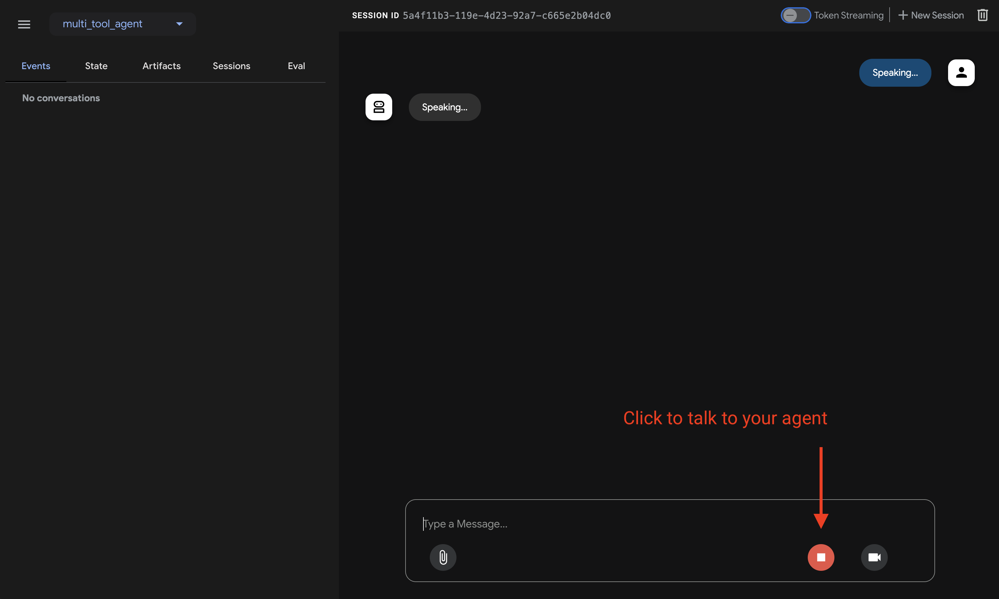

Build a multi-tool agent¶
This quickstart guides you through installing Agent Development Kit (ADK), setting up a basic agent with multiple tools, and running it locally either in the terminal or in the interactive, browser-based dev UI.
This quickstart assumes a local IDE (VS Code, PyCharm, IntelliJ IDEA, etc.) with Python 3.10+ or Java 17+ and terminal access. This method runs the application entirely on your machine and is recommended for internal development.
1. Set up Environment & Install ADK¶
Create & Activate Virtual Environment (Recommended):
# Create
python3 -m venv .venv
# Activate (each new terminal)
# macOS/Linux: source .venv/bin/activate
# Windows CMD: .venv\Scripts\activate.bat
# Windows PowerShell: .venv\Scripts\Activate.ps1
Install ADK:
Create a new project directory, initialize it, and install dependencies:
mkdir my-adk-agent
cd my-adk-agent
npm init -y
npm install @google/adk @google/adk-devtools
npm install -D typescript
Create a tsconfig.json file with the following content. This configuration
ensures your project correctly handles modern Node.js modules.
Create a new Go module¶
If you are starting a new project, you can create a new Go module:
Install ADK¶
To add the ADK to your project, run the following command:
This will add the ADK as a dependency to your go.mod file.
To install ADK Java and set up the environment, see the Java Quickstart.
To install ADK Kotlin and set up the environment, see the Kotlin Quickstart.
2. Create Agent Project¶
Project structure¶
You will need to create the following project structure:
Create the folder multi_tool_agent:
Note for Windows users
When using ADK on Windows for the next few steps, we recommend creating
Python files using File Explorer or an IDE because the following commands
(mkdir, echo) typically generate files with null bytes and/or incorrect
encoding.
__init__.py¶
Now create an __init__.py file in the folder:
Your __init__.py should now look like this:
agent.py¶
Create an agent.py file in the same folder:
Copy and paste the following code into agent.py:
# Copyright 2026 Google LLC
#
# Licensed under the Apache License, Version 2.0 (the "License");
# you may not use this file except in compliance with the License.
# You may obtain a copy of the License at
#
# http://www.apache.org/licenses/LICENSE-2.0
#
# Unless required by applicable law or agreed to in writing, software
# distributed under the License is distributed on an "AS IS" BASIS,
# WITHOUT WARRANTIES OR CONDITIONS OF ANY KIND, either express or implied.
# See the License for the specific language governing permissions and
# limitations under the License.
import datetime
from zoneinfo import ZoneInfo
from google.adk.agents import Agent
def get_weather(city: str) -> dict:
"""Retrieves the current weather report for a specified city.
Args:
city (str): The name of the city for which to retrieve the weather report.
Returns:
dict: status and result or error msg.
"""
if city.lower() == "new york":
return {
"status": "success",
"report": (
"The weather in New York is sunny with a temperature of 25 degrees"
" Celsius (77 degrees Fahrenheit)."
),
}
else:
return {
"status": "error",
"error_message": f"Weather information for '{city}' is not available.",
}
def get_current_time(city: str) -> dict:
"""Returns the current time in a specified city.
Args:
city (str): The name of the city for which to retrieve the current time.
Returns:
dict: status and result or error msg.
"""
if city.lower() == "new york":
tz_identifier = "America/New_York"
else:
return {
"status": "error",
"error_message": (
f"Sorry, I don't have timezone information for {city}."
),
}
tz = ZoneInfo(tz_identifier)
now = datetime.datetime.now(tz)
report = (
f'The current time in {city} is {now.strftime("%Y-%m-%d %H:%M:%S %Z%z")}'
)
return {"status": "success", "report": report}
root_agent = Agent(
name="weather_time_agent",
model="gemini-flash-latest",
description=(
"Agent to answer questions about the time and weather in a city."
),
instruction=(
"You are a helpful agent who can answer user questions about the time and weather in a city."
),
tools=[get_weather, get_current_time],
)
.env¶
Create a .env file in the same folder:
More instructions about this file are described in the next section on Set up the model.
You will need to create the following project structure in your my-adk-agent directory:
agent.ts¶
Create an agent.ts file in your project folder:
Copy and paste the following code into agent.ts:
import 'dotenv/config';
import { FunctionTool, LlmAgent } from '@google/adk';
import { z } from 'zod';
const getWeather = new FunctionTool({
name: 'get_weather',
description: 'Retrieves the current weather report for a specified city.',
parameters: z.object({
city: z.string().describe('The name of the city for which to retrieve the weather report.'),
}),
execute: ({ city }) => {
if (city.toLowerCase() === 'new york') {
return {
status: 'success',
report:
'The weather in New York is sunny with a temperature of 25 degrees Celsius (77 degrees Fahrenheit).',
};
} else {
return {
status: 'error',
error_message: `Weather information for '${city}' is not available.`,
};
}
},
});
const getCurrentTime = new FunctionTool({
name: 'get_current_time',
description: 'Returns the current time in a specified city.',
parameters: z.object({
city: z.string().describe("The name of the city for which to retrieve the current time."),
}),
execute: ({ city }) => {
let tz_identifier: string;
if (city.toLowerCase() === 'new york') {
tz_identifier = 'America/New_York';
} else {
return {
status: 'error',
error_message: `Sorry, I don't have timezone information for ${city}.`,
};
}
const now = new Date();
const report = `The current time in ${city} is ${now.toLocaleString('en-US', { timeZone: tz_identifier })}`;
return { status: 'success', report: report };
},
});
export const rootAgent = new LlmAgent({
name: 'weather_time_agent',
model: 'gemini-flash-latest',
description: 'Agent to answer questions about the time and weather in a city.',
instruction: 'You are a helpful agent who can answer user questions about the time and weather in a city.',
tools: [getWeather, getCurrentTime],
});
.env¶
Create a .env file in the same folder:
More instructions about this file are described in the next section on Set up the model.
You will need to create the following project structure:
agent.go¶
Create an agent.go file in your project folder:
Copy and paste the following code into agent.go:
package main
import (
"context"
"log"
"os"
"strings"
"time"
"google.golang.org/genai"
"google.golang.org/adk/v2/agent"
"google.golang.org/adk/v2/agent/llmagent"
"google.golang.org/adk/v2/cmd/launcher"
"google.golang.org/adk/v2/cmd/launcher/full"
"google.golang.org/adk/v2/model/gemini"
"google.golang.org/adk/v2/tool"
"google.golang.org/adk/v2/tool/functiontool"
)
type CityArgs struct {
City string `json:"city"`
}
func main() {
ctx := context.Background()
// 1. Setup the model.
// Note: Authentication is handled via GOOGLE_API_KEY environment variable.
model, err := gemini.NewModel(ctx, "gemini-flash-latest", &genai.ClientConfig{
APIKey: os.Getenv("GOOGLE_API_KEY"),
})
if err != nil {
log.Fatalf("Failed to create model: %v", err)
}
weatherTool, err := functiontool.New[CityArgs, map[string]any](
functiontool.Config{
Name: "get_weather",
Description: "Retrieves the current weather report for a specified city.",
},
func(ctx agent.Context, args CityArgs) (map[string]any, error) {
if strings.EqualFold(args.City, "new york") {
return map[string]any{
"status": "success",
"report": "The weather in New York is sunny with a temperature of 25 degrees Celsius (77 degrees Fahrenheit).",
}, nil
}
return map[string]any{
"status": "error",
"error_message": "Weather information for '" + args.City + "' is not available.",
}, nil
},
)
if err != nil {
log.Fatalf("Failed to create get_weather tool: %v", err)
}
currentTimeTool, err := functiontool.New[CityArgs, map[string]any](
functiontool.Config{
Name: "get_current_time",
Description: "Returns the current time in a specified city.",
},
func(ctx agent.Context, args CityArgs) (map[string]any, error) {
var tzIdentifier string
if strings.EqualFold(args.City, "new york") {
tzIdentifier = "America/New_York"
} else {
return map[string]any{
"status": "error",
"error_message": "Sorry, I don't have timezone information for " + args.City + ".",
}, nil
}
tz, err := time.LoadLocation(tzIdentifier)
if err != nil {
return nil, err
}
now := time.Now().In(tz)
report := "The current time in " + args.City + " is " + now.Format("2006-01-02 15:04:05 MST-0700")
return map[string]any{
"status": "success",
"report": report,
}, nil
},
)
if err != nil {
log.Fatalf("Failed to create get_current_time tool: %v", err)
}
// 2. Define the agent.
a, err := llmagent.New(llmagent.Config{
Name: "weather_time_agent",
Model: model,
Description: "Agent to answer questions about the time and weather in a city.",
Instruction: "You are a helpful agent who can answer user questions about the time and weather in a city.",
Tools: []tool.Tool{
weatherTool,
currentTimeTool,
},
})
if err != nil {
log.Fatalf("Failed to create agent: %v", err)
}
// 3. Configure the launcher and run.
config := &launcher.Config{
AgentLoader: agent.NewSingleLoader(a),
}
l := full.NewLauncher()
if err = l.Execute(ctx, config, os.Args[1:]); err != nil {
log.Fatalf("Run failed: %v\n\n%s", err, l.CommandLineSyntax())
}
}
.env¶
Create a .env file in the same folder:
Java projects generally feature the following project structure:
project_folder/
├── pom.xml (or build.gradle)
├── src/
├── └── main/
│ └── java/
│ └── agents/
│ └── multitool/
└── test/
Create MultiToolAgent.java¶
Create a MultiToolAgent.java source file in the agents.multitool package
in the src/main/java/agents/multitool/ directory.
Copy and paste the following code into MultiToolAgent.java:
package agents.multitool;
import com.google.adk.agents.BaseAgent;
import com.google.adk.agents.LlmAgent;
import com.google.adk.events.Event;
import com.google.adk.runner.InMemoryRunner;
import com.google.adk.sessions.Session;
import com.google.adk.tools.Annotations.Schema;
import com.google.adk.tools.FunctionTool;
import com.google.genai.types.Content;
import com.google.genai.types.Part;
import io.reactivex.rxjava3.core.Flowable;
import java.nio.charset.StandardCharsets;
import java.text.Normalizer;
import java.time.ZoneId;
import java.time.ZonedDateTime;
import java.time.format.DateTimeFormatter;
import java.util.Map;
import java.util.Scanner;
public class MultiToolAgent {
private static String USER_ID = "student";
private static String NAME = "multi_tool_agent";
// The run your agent with Dev UI, the ROOT_AGENT should be a global public static final variable.
public static final BaseAgent ROOT_AGENT = initAgent();
public static BaseAgent initAgent() {
return LlmAgent.builder()
.name(NAME)
.model("gemini-flash-latest")
.description("Agent to answer questions about the time and weather in a city.")
.instruction(
"You are a helpful agent who can answer user questions about the time and weather"
+ " in a city.")
.tools(
FunctionTool.create(MultiToolAgent.class, "getCurrentTime"),
FunctionTool.create(MultiToolAgent.class, "getWeather"))
.build();
}
public static Map<String, String> getCurrentTime(
@Schema(name = "city",
description = "The name of the city for which to retrieve the current time")
String city) {
String normalizedCity =
Normalizer.normalize(city, Normalizer.Form.NFD)
.trim()
.toLowerCase()
.replaceAll("(\\p{IsM}+|\\p{IsP}+)", "")
.replaceAll("\\s+", "_");
return ZoneId.getAvailableZoneIds().stream()
.filter(zid -> zid.toLowerCase().endsWith("/" + normalizedCity))
.findFirst()
.map(
zid ->
Map.of(
"status",
"success",
"report",
"The current time in "
+ city
+ " is "
+ ZonedDateTime.now(ZoneId.of(zid))
.format(DateTimeFormatter.ofPattern("HH:mm"))
+ "."))
.orElse(
Map.of(
"status",
"error",
"report",
"Sorry, I don't have timezone information for " + city + "."));
}
public static Map<String, String> getWeather(
@Schema(name = "city",
description = "The name of the city for which to retrieve the weather report")
String city) {
if (city.toLowerCase().equals("new york")) {
return Map.of(
"status",
"success",
"report",
"The weather in New York is sunny with a temperature of 25 degrees Celsius (77 degrees"
+ " Fahrenheit).");
} else {
return Map.of(
"status", "error", "report", "Weather information for " + city + " is not available.");
}
}
public static void main(String[] args) throws Exception {
InMemoryRunner runner = new InMemoryRunner(ROOT_AGENT);
Session session =
runner
.sessionService()
.createSession(NAME, USER_ID)
.blockingGet();
try (Scanner scanner = new Scanner(System.in, StandardCharsets.UTF_8)) {
while (true) {
System.out.print("\nYou > ");
String userInput = scanner.nextLine();
if ("quit".equalsIgnoreCase(userInput)) {
break;
}
Content userMsg = Content.fromParts(Part.fromText(userInput));
Flowable<Event> events = runner.runAsync(USER_ID, session.id(), userMsg);
System.out.print("\nAgent > ");
events.blockingForEach(event -> System.out.println(event.stringifyContent()));
}
}
}
}
Kotlin projects generally feature the following project structure:
project_folder/
├── build.gradle.kts
├── src/
├── └── main/
│ └── kotlin/
│ └── agents/
│ └── multitool/
Create MultiToolAgent.kt¶
Create a MultiToolAgent.kt source file in the src/main/kotlin/agents/multitool/ directory.
Copy and paste the following code into MultiToolAgent.kt:
package agents.multitool
import com.google.adk.kt.agents.Instruction
import com.google.adk.kt.agents.LlmAgent
import com.google.adk.kt.annotations.Param
import com.google.adk.kt.annotations.Tool
import com.google.adk.kt.models.Gemini
import com.google.adk.kt.runners.InMemoryRunner
import com.google.adk.kt.sessions.InMemorySessionService
import com.google.adk.kt.sessions.SessionKey
import com.google.adk.kt.types.Content
import com.google.adk.kt.types.Part
import com.google.adk.kt.types.Role
import kotlinx.coroutines.flow.toList
import kotlinx.coroutines.runBlocking
import java.text.Normalizer
import java.time.ZoneId
import java.time.ZonedDateTime
import java.time.format.DateTimeFormatter
import java.util.Scanner
class MultiToolService {
@Tool
fun getCurrentTime(
@Param("The name of the city for which to retrieve the current time") city: String,
): Map<String, String> {
val normalizedCity =
Normalizer.normalize(city, Normalizer.Form.NFD)
.trim()
.lowercase()
.replace(Regex("(\\p{IsM}+|\\p{IsP}+)"), "")
.replace(Regex("\\s+"), "_")
val zoneId =
ZoneId.getAvailableZoneIds()
.firstOrNull { it.lowercase().endsWith("/$normalizedCity") }
return if (zoneId != null) {
val time =
ZonedDateTime.now(ZoneId.of(zoneId))
.format(DateTimeFormatter.ofPattern("HH:mm"))
mapOf(
"status" to "success",
"report" to "The current time in $city is $time.",
)
} else {
mapOf(
"status" to "error",
"report" to "Sorry, I don't have timezone information for $city.",
)
}
}
@Tool
fun getWeather(
@Param("The name of the city for which to retrieve the weather report") city: String,
): Map<String, String> {
return if (city.lowercase() == "new york") {
mapOf(
"status" to "success",
"report" to "The weather in New York is sunny with a temperature of " +
"25 degrees Celsius (77 degrees Fahrenheit).",
)
} else {
mapOf(
"status" to "error",
"report" to "Weather information for $city is not available.",
)
}
}
}
fun main() =
runBlocking {
val model = Gemini(name = "gemini-flash-latest")
val agent =
LlmAgent(
name = "multi_tool_agent",
model = model,
description = "Agent to answer questions about the time and weather in a city.",
instruction =
Instruction(
"You are a helpful agent who can answer user questions about the " +
"time and weather in a city.",
),
tools = MultiToolService().generatedTools(),
)
val sessionService = InMemorySessionService()
val runner =
InMemoryRunner(
agent = agent,
appName = "multi_tool_app",
sessionService = sessionService,
)
val userId = "student"
val sessionId = "session_1"
sessionService.createSession(SessionKey("multi_tool_app", userId, sessionId))
val scanner = Scanner(System.`in`)
while (true) {
print("\nYou > ")
val userInput = scanner.nextLine()
if (userInput.lowercase() == "quit") break
val userContent = Content(role = Role.USER, parts = listOf(Part(text = userInput)))
val events =
runner.runAsync(
userId = userId,
sessionId = sessionId,
newMessage = userContent,
).toList()
print("\nAgent > ")
for (event in events) {
event.content?.parts?.forEach { part ->
part.text?.let { print(it) }
}
}
println()
}
}

3. Set up the model¶
Your agent's ability to understand user requests and generate responses is powered by a generative AI model or Large Language Model (LLM). This guide uses Gemini models as examples, but ADK is compatible with many AI models from Google and other providers. For more information on available models and how to configure them, see AI Models for ADK agents.
Model connection and authentication¶
When using an AI model through a service, such as the Gemini API or Gemini
Enterprise Agent Platform on Google Cloud, you must provide an API key or
authenticate with the service. The most direct way to provide this information
is to use environment variables or an .env file. The following examples show
the most common way to configure an agent for use with the Gemini API or Gemini
Enterprise Agent Platform.
For more details on connecting ADK agents to Google Cloud hosted models and services, including Gemini Enterprise Agent Platform, see the Connect to Google Cloud and Agent Platform guide.
4. Run Your Agent¶
Using the terminal, navigate to the parent directory of your agent project
(e.g. using cd ..):
There are multiple ways to interact with your agent:
Authentication Setup for Agent Platform Users
If you selected "Gemini - Google Cloud Agent Platform" in the previous step, you must authenticate with Google Cloud before launching the dev UI.
Run this command and follow the prompts:
Note: Skip this step if you're using "Gemini - Google AI Studio".
Run the following command to launch the dev UI.
Caution: ADK Web for development only
ADK Web is not meant for use in production deployments. You should use ADK Web for development and debugging purposes only.
Note for Windows users
When hitting the _make_subprocess_transport NotImplementedError, consider using adk web --no-reload instead.
Step 1: Open the URL provided (usually http://localhost:8000 or
http://127.0.0.1:8000) directly in your browser.
Step 2. In the top-left corner of the UI, you can select your agent in the dropdown. Select "multi_tool_agent".
Troubleshooting
If you do not see "multi_tool_agent" in the dropdown menu, make sure you
are running adk web in the parent folder of your agent folder
(i.e. the parent folder of multi_tool_agent).
Step 3. Now you can chat with your agent using the textbox:

Step 4. By using the Events tab at the left, you can inspect
individual function calls, responses and model responses by clicking on the
actions:

On the Events tab, you can also click the Trace button to see the trace logs for each event that shows the latency of each function calls:

Step 5. You can also enable your microphone and talk to your agent:
Model support for voice/video streaming
In order to use voice/video streaming in ADK, you will need to use Gemini models that support the Live API. You can find the model ID(s) that supports the Gemini Live API in the documentation:
You can then replace the model string in root_agent in the agent.py file you created earlier (jump to section). Your code should look something like:

Tip
When using adk run you can inject prompts into the agent to start by
piping text to the command like so:
Run the following command, to chat with your Weather agent.

To exit, use Cmd/Ctrl+C.
adk api_server enables you to create a local FastAPI server in a single
command, enabling you to test local cURL requests before you deploy your
agent.

To learn how to use adk api_server for testing, refer to the
documentation on using the API server.
Using the terminal, navigate to your agent project directory:
There are multiple ways to interact with your agent:
Run the following command to launch the dev UI.
Step 1: Open the URL provided (usually http://localhost:8000 or
http://127.0.0.1:8000) directly in your browser.
Step 2. In the top-left corner of the UI, select your agent from the dropdown. The agents are listed by their filenames, so you should select "agent".
Troubleshooting
If you do not see "agent" in the dropdown menu, make sure you
are running npx adk web in the directory containing your agent.ts file.
Step 3. Now you can chat with your agent using the textbox:
Step 4. By using the Events tab at the left, you can inspect
individual function calls, responses and model responses by clicking on the
actions:
On the Events tab, you can also click the Trace button to see the trace logs for each event that shows the latency of each function calls:
npx adk api_server enables you to create a local Express.js server in a single
command, enabling you to test local cURL requests before you deploy your
agent.
To learn how to use api_server for testing, refer to the
documentation on testing.
Using the terminal, navigate to your agent project directory:
There are multiple ways to interact with your agent:
Run the following command to launch the dev UI. You must specify which sub-launchers to activate (e.g., webui, api).
Step 1: Open the URL provided (usually http://localhost:8080) directly in your browser.
Step 2. In the top-left corner of the UI, select your agent from the dropdown. It should be "weather_time_agent".
Step 3. Now you can chat with your agent using the textbox.
Using the terminal, navigate to the parent directory of your agent project
(e.g. using cd ..):
project_folder/ <-- navigate to this directory
├── pom.xml (or build.gradle)
├── src/
├── └── main/
│ └── java/
│ └── agents/
│ └── multitool/
│ └── MultiToolAgent.java
└── test/
Run the following command from the terminal to launch the Dev UI.
DO NOT change the main class name of the Dev UI server.
mvn exec:java \
-Dexec.mainClass="com.google.adk.web.AdkWebServer" \
-Dexec.args="--adk.agents.source-dir=src/main/java" \
-Dexec.classpathScope="compile"
Step 1: Open the URL provided (usually http://localhost:8080 or
http://127.0.0.1:8080) directly in your browser.
Step 2. In the top-left corner of the UI, you can select your agent in the dropdown. Select "multi_tool_agent".
Troubleshooting
If you do not see "multi_tool_agent" in the dropdown menu, make sure you
are running the mvn command at the location where your Java source code
is located (usually src/main/java).
Step 3. Now you can chat with your agent using the textbox:
Step 4. You can also inspect individual function calls, responses and model responses by clicking on the actions:
Caution: ADK Web for development only
ADK Web is not meant for use in production deployments. You should use ADK Web for development and debugging purposes only.
With Maven, run the main() method of your Java class
with the following command:
With Gradle, the build.gradle or build.gradle.kts build file
should have the following Java plugin in its plugins section:
Then, elsewhere in the build file, at the top-level,
create a new task to run the main() method of your agent:
tasks.register('runAgent', JavaExec) {
classpath = sourceSets.main.runtimeClasspath
mainClass = 'agents.multitool.MultiToolAgent'
}
Finally, on the command-line, run the following command:
Using the terminal, navigate to your agent project directory:
project_folder/ <-- navigate to this directory
├── build.gradle.kts
├── src/
├── └── main/
│ └── kotlin/
│ └── agents/
│ └── multitool/
│ └── MultiToolAgent.kt
Run your Agent¶
You can run the main() method of your Kotlin class using Gradle:
Or if you are using IntelliJ IDEA, you can just click the green run arrow next to the main() function.
📝 Example prompts to try¶
- What is the weather in New York?
- What is the time in New York?
- What is the weather in Paris?
- What is the time in Paris?
🎉 Congratulations!¶
You've successfully created and interacted with your first agent using ADK!
🛣️ Next steps¶
- Go to the tutorial: Learn how to add memory, session, state to your agent: tutorial.
- Delve into advanced configuration: Explore the setup section for deeper dives into project structure, configuration, and other interfaces.
- Understand Core Concepts: Learn about agents concepts.